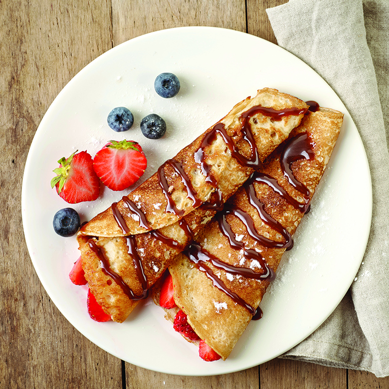

crêpe recipe
Home

This easy French crêpe recipe makes thin, soft pancakes that can be filled with sweet or savory ingredients. Made with flour, eggs, milk, and a bit of oil or butter, the batter is simple and quick to prepare. Once cooked in a hot pan, the crêpes turn golden and flexible—perfect for rolling or folding with your favorite fillings like Nutella, fruit, or cheese.
Ingredients (for about 10 crêpes):
1cup (125g) all-purpose flour
2 eggs
1 1/4 cups (300ml) milk
1 tbsp vegetable oil or melted butter
1 tbsp sugar (optional – for sweet crêpes)
1 pinch of salt
Butter or oil for the pan
Instructions:
1.Make the batter:
In a large bowl, whisk the flour and the eggs together.
Gradually add the milk while whisking to avoid lumps.
Add the oil (or melted butter), salt, and sugar if using. Mix until smooth.
Let the batter rest for at least 30 minutes (optional but recommended for better texture).
2.Cook the crêpes:
Heat a non-stick frying pan over medium heat and lightly grease it with butter or oil.
Pour a small amount of batter (about 1/4 cup) into the pan and swirl it around to spread evenly.
Cook for about 1–2 minutes until the edges start to brown, then flip and cook for another 30 seconds to 1 minute.
Repeat with the remaining batter.
3.Serve:
Serve warm with your favorite fillings: sugar, jam, Nutella, fruits, whipped cream, or savory options like ham and cheese.